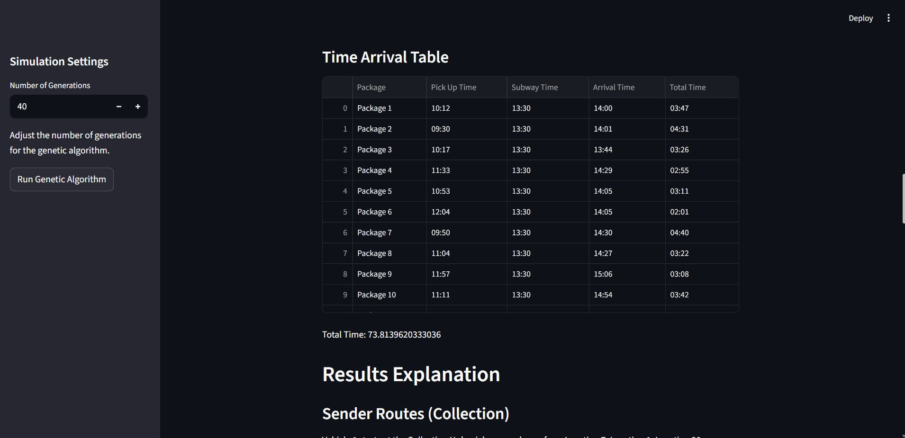
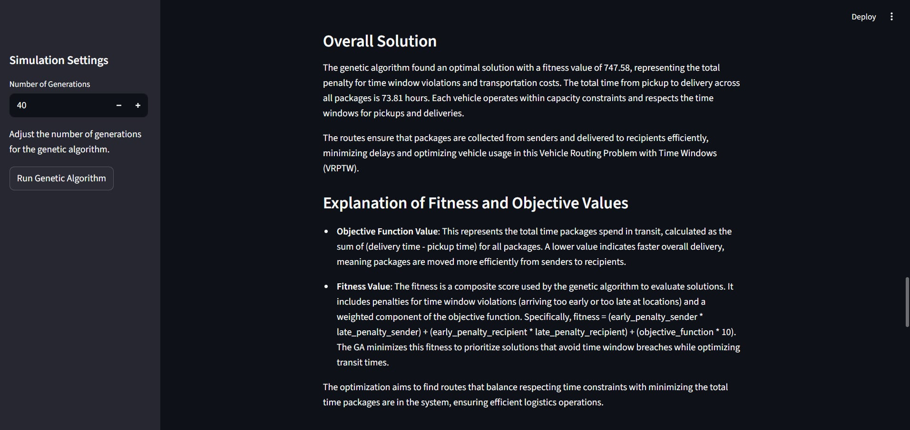
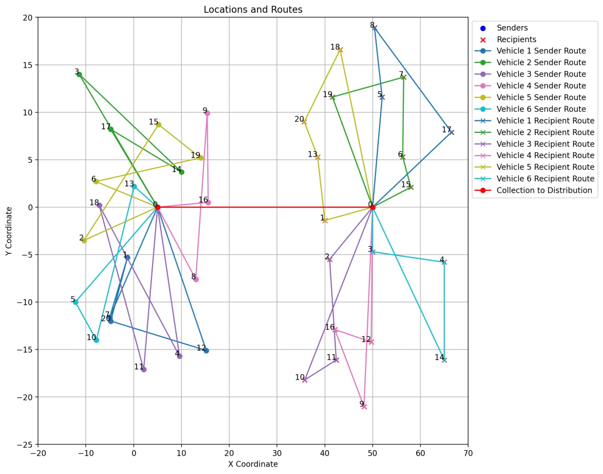
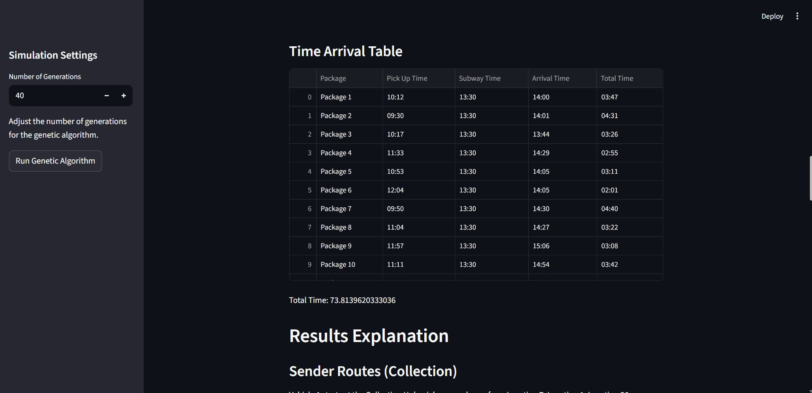
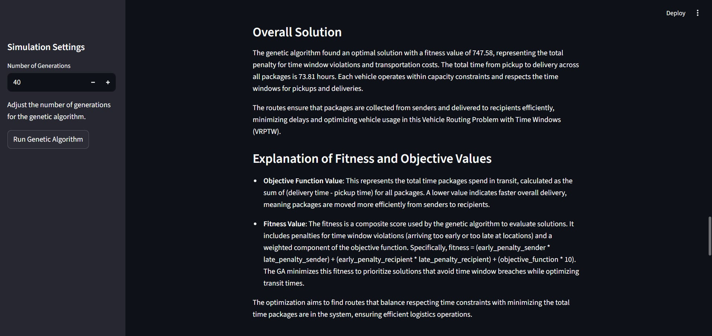
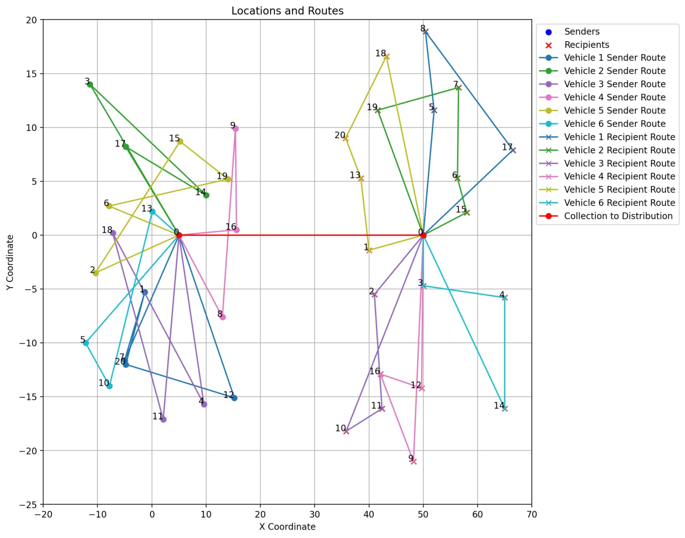
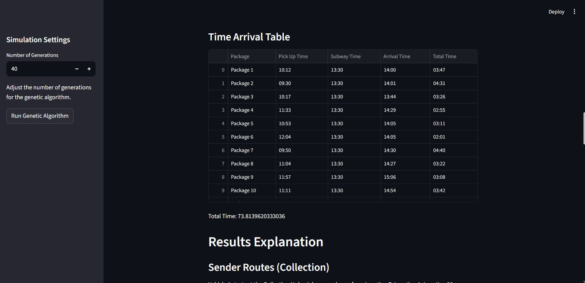
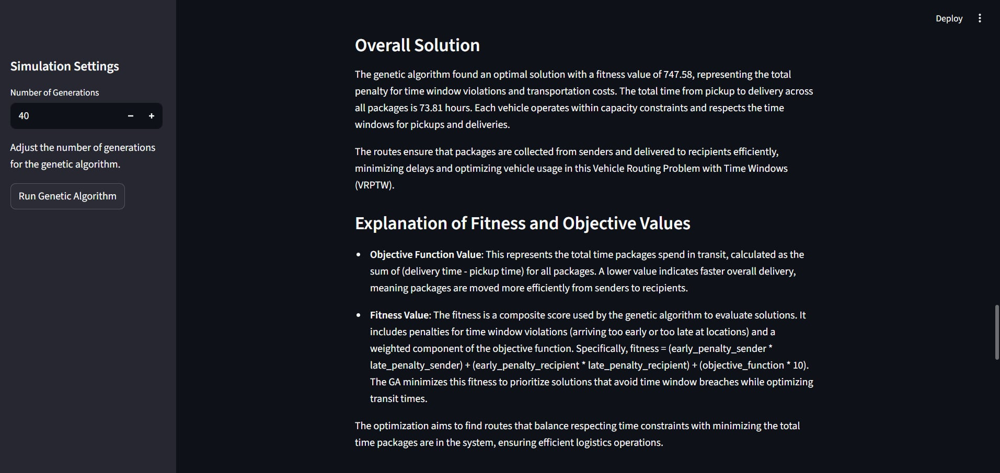
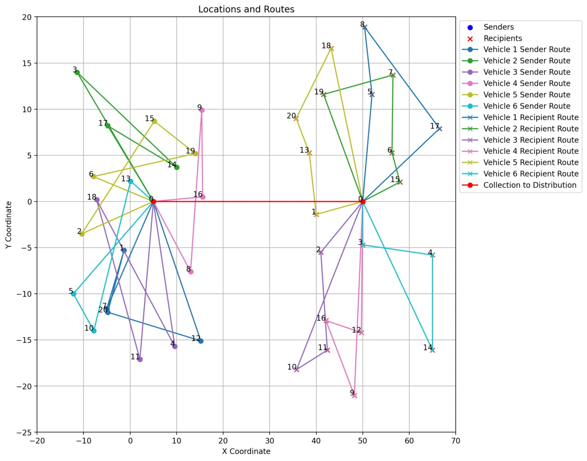

Demo
 





An optimization system solving VRPTW using a Genetic Algorithm with visualization support.
This project focuses on solving the Vehicle Routing Problem with Time Windows (VRPTW) using a Genetic Algorithm (GA). The goal is to optimize vehicle routes while respecting capacity constraints and delivery time windows.



Python, Genetic Algorithm (DEAP), NumPy, Matplotlib, Streamlit